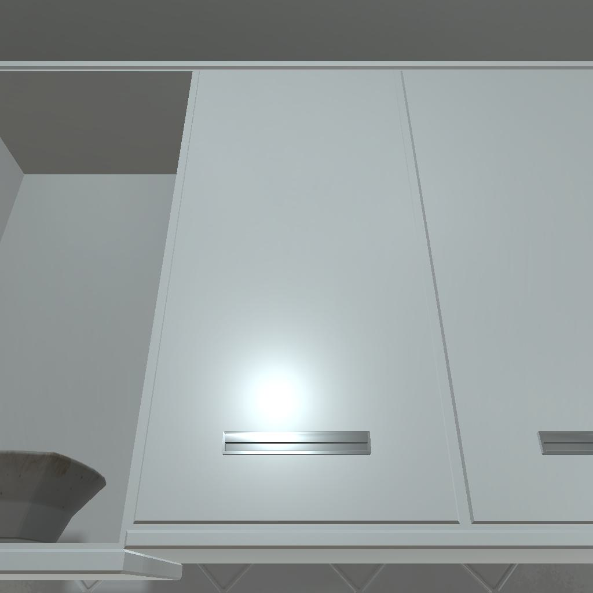

---------------------------------------------------------task: 12---------------------------------------------------------
--------------------------------------------------------------------------------------------------------------------------------------------------------------------
--------------------------------------------------------------------------------------------------------------------------------------------------------------------
Step:--------------------------------------------------------------------------17-------------------------------------------------------------------------------
----------------------------------------
VLM Prompt:
Image1:
Image2:
Image3:
**Instruction**
1. Analyze the provided images to identify all visible household objects and compare the difference between images (e.h. whether the object is opened or not and taken on hand or not), focusing on those relevant to the task description "clean some tomato and put it in countertop."
2. Use the analysis of images and the task hint "The agent must find an object of the desired type, pick it up, go to a sink or a basin, clean the object with a sink or basin, and then find the correct location to place it and put it down there. The agent does not need to use soap bottle or faucet to clean the object, and the agent just needs to do action that is "clean the object with the sink or sink basin"." to answer the question: what is the most reasonable action in the choices for the task description "clean some tomato and put it in countertop"?
3. Decide and write the answer using the template: The answer is: (i): , where i is the real number. If there is no desired object in images, search every place based on **Initial Observation** to find the object. And if no one is exactly correct, choose a similar answer.
**Initial Observation**
You are in the middle of a room. Looking quickly around you, you can see cabinet (1-6), microwave (1), countertop (1-2), coffeemachine (1), toaster (1), sink (1), sinkbasin (1), fridge (1)
**Answer Choices**
(1): go to cabinet 1
(2): go to microwave 1
(3): go to cabinet 4
(4): go to cabinet 5
(5): go to cabinet 6
(6): go to countertop 1
(7): go to coffeemachine 1
(8): go to toaster 1
(9): go to countertop 2
(10): go to sink 1
(11): go to sinkbasin 1
(12): open fridge 1
(13): close fridge 1
(14): take apple 1 from fridge 1
(15): take potato 1 from fridge 1
(16): examine fridge 1
**Answer**
Let's think step by step by following the instructions.
----------------------------------------
----------------------------------------
Original Response:
Image Analysis:
- Image1 and Image2 are identical, showing a closed cabinet with shiny handles.
- Image3 shows a dark compartment, potentially a fridge or a cabinet, with shelves containing a potato and a tomato.
Task Description Analysis:
The task is to clean a tomato and put it on the countertop. The agent needs to find a tomato, clean it at the sink or basin, and place it on the countertop.
Based on the Initial Observation, the tomato is not in plain sight, but Image3 shows a tomato on a shelf. This could be inside the fridge or a cabinet.
Answer Choices Analysis:
- (1) to (5) and (7) to (9) are not relevant as they involve going to cabinets, microwaves, coffee machines, toasters, and countertops, which do not contain the tomato.
- (10) and (11) involve going to the sink and sink basin, which are necessary steps, but the tomato must be found first.
- (12) to (16) involve actions related to the fridge, which is promising since Image3 looks like it could be inside a fridge.
The most reasonable action to start the task of cleaning a tomato would be to first find the tomato. Since Image3 shows a tomato on a shelf that appears to be inside a fridge or cabinet, and the Initial Observation mentions a fridge, it is logical to start by opening the fridge.
The answer is: (12): open fridge 1.
----------------------------------------
----------------------------------------
>>> Refine Original VLM Response and Get Pure Action: open fridge 1
----------------------------------------
-----------------------------------------------------------------
Running time: 12.963886976242065 seconds
Total Money: 6.842230000000007
-----------------------------------------------------------------
-----------------------------------------------------------------
Text Observation:Nothing happens.
-----------------------------------------------------------------
UNSUCCEED